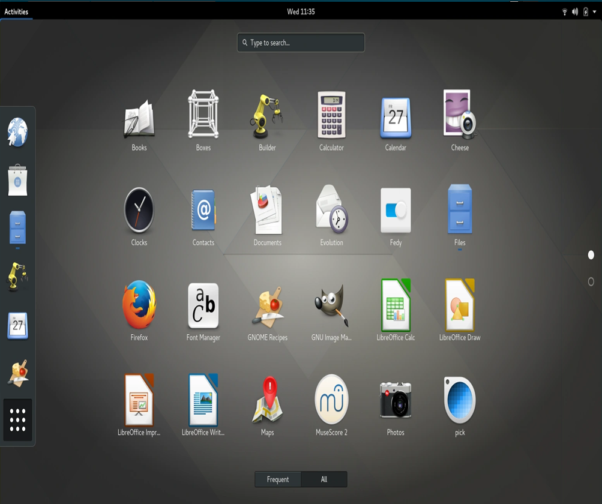
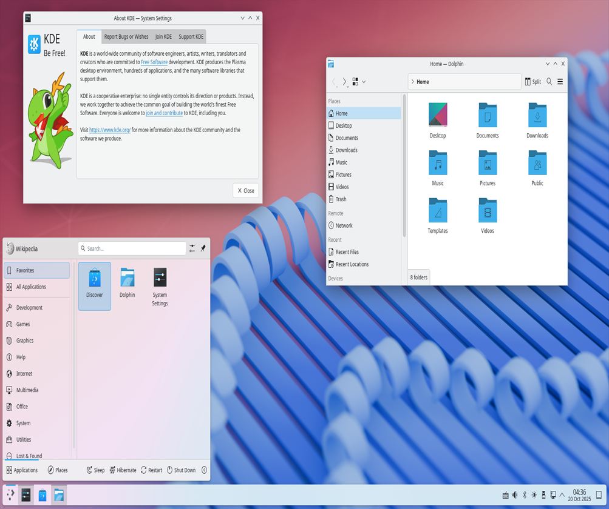
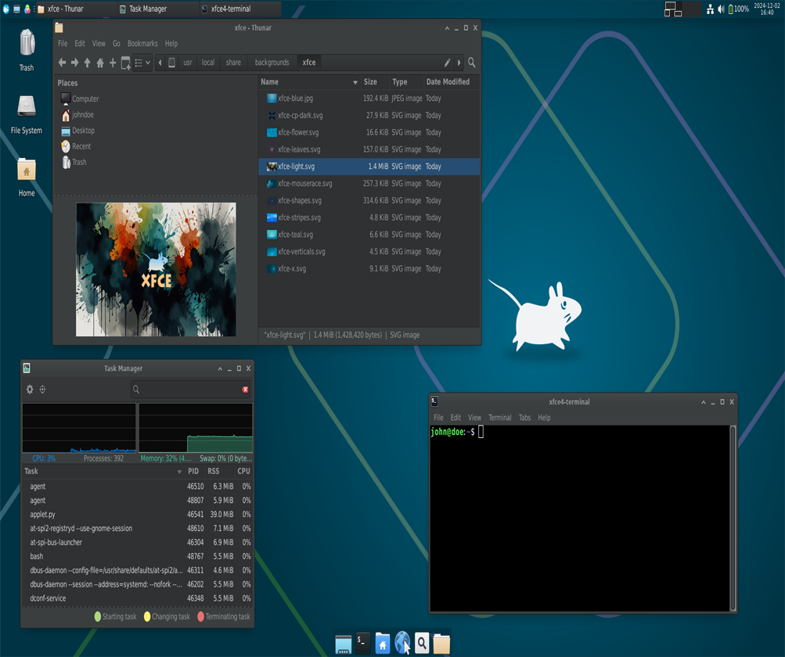
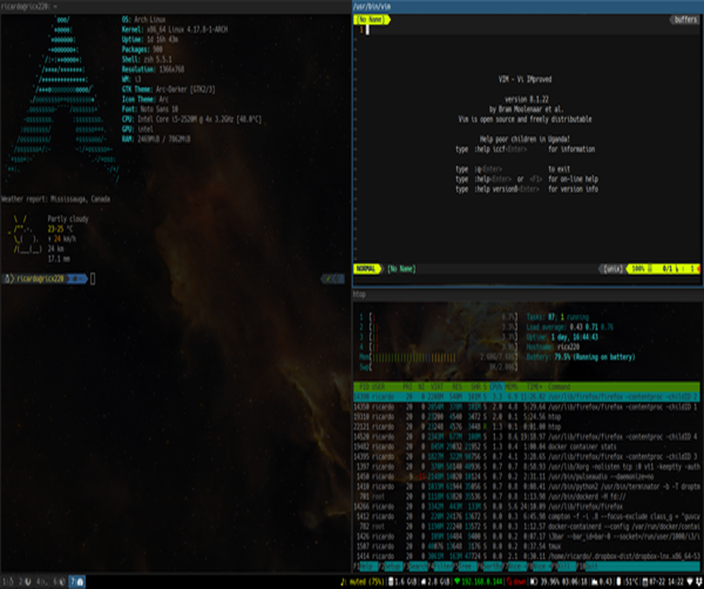

GNOME
GNOME heeft een modern en minimalistisch ontwerp. Het richt zich op eenvoud en een rustige werkomgeving zonder te veel afleiding. Veel instellingen zijn bewust verborgen, zodat de gebruiker zich kan focussen op het werk.
GNOME heeft een modern en minimalistisch ontwerp. Het richt zich op eenvoud en een rustige werkomgeving zonder te veel afleiding. Veel instellingen zijn bewust verborgen, zodat de gebruiker zich kan focussen op het werk.

KDE Plasma is een zeer aanpasbare desktopomgeving. Gebruikers kunnen bijna alles veranderen: uiterlijk, indeling en gedrag van het systeem. Het is geschikt voor mensen die maximale controle en flexibiliteit willen.

XFCE is licht, snel en ideaal voor oudere of minder krachtige computers. Cinnamon is juist gericht op gebruiksgemak en voelt vertrouwd aan voor Windows-gebruikers. Beide zijn stabiel en praktisch voor dagelijks gebruik.

i3wm is een minimalistische tiling window manager die volledig met het toetsenbord wordt bediend. Vensters worden automatisch geordend zonder overlapping, wat zorgt voor een efficiënte en snelle workflow. i3wm gebruikt weinig systeembronnen en is vooral populair bij gevorderde gebruikers en programmeurs die maximale controle en productiviteit willen.
